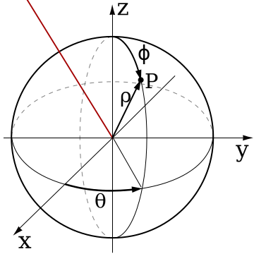

Transformation Functions
- Be able to convert between rectangular and polar coordinates in 2D.
- Graph polar functions in the plane. Find intersections of polar equations, and illustrate that not every intersection can be obtained algebraically (you may have to graph the curves).
- Find derivatives and tangent lines in polar coordinates.
Transformations of $\RR^2$
Coordinate transformations let us view or discuss the plane or space in a different way. A 2d transformation $\vec T(u,v)=(x,y)$ tells us how to transform a $(u,v)$ axes into an $(x,y)$ axes—the two outputs of $\vec T$ are considered the $x$ and $y$ coordinates corresponding to the inputs $u$ and $v$.
Consider the coordinate transformation $$\vec T(r,\theta) = (r\cos\theta,r\sin\theta).$$ In other words, according to $\vec T$, $x=r\cos\theta$ and $y=r\sin\theta$. This is called the polar coordinate transformation.
- Draw two 2D axes, one having horizontal axis $r$ and vertical axis $\theta$, and the other axes having horizontal axis $x$ and vertical axis $y$. In the next few parts, we'll see how $\vec T$ will tell us how points on the $(r,\theta)$ axes transform to points on the $(x,y)$ axes.
- Plot the point $(r,\theta)=(1,\pi/2)$ on the $(r,\theta)$ axes. According to $\vec T$, this point is transformed to what $(x,y)$ point? Plot this corresponding point on the $(x,y)$ axes.
-
See Sage to check your answer.Plot the line segment $r=3$ (for $\theta\in [0,2\pi]$) on the $(r,\theta)$ axes. Plot the corresponding points on the $(x,y)$ axes by letting $r=3$ in $\vec T$ and graphing $\vec T(3,\theta)=(3\cos\theta,3\sin\theta)$ for $\theta\in[0,2\pi]$ (hint: this is just a parametric curve, like we've been plotting).
-
See Sage. Notice that you can add two plots together to draw them both.Plot the line segment $\theta=\pi/4$ (for $r\in[0,5]$) on the $(r,\theta)$ axes. Plot the corresponding points on the $(x,y)$ axes by letting $\theta=\frac{\pi}{4}$ and then, on the same axes as above, add the graph of $\vec T\left(r,\frac{\pi}{4}\right)=\left(r\frac{\sqrt 2}{2},r \frac{\sqrt 2}{2}\right)$ for $r\in[0,5]$.
- Use Sage to check your answer. Add to the $(r,\theta)$ axes the plots of $r=1$, $r=2$, $r=3$, and $r=4$ for $\theta\in [0,2\pi]$ and the plots of $\theta=0$, $\theta=\pi/2$, $\theta=3\pi/4$, and $\theta=\pi$ for $r\in[0,5]$. Add the corresponding plots to the $(x,y)$ axes.
In the previous problem, you saw how we can think of 2D transformations as mapping the points of one plane onto another. Another way of thinking about transformations is to view them as giving additional coordinates to points on the plane, i.e., if $\vec T(u,v)=(x,y)$, then the point $(x,y)$ also can be called the point $(u,v)$ in the coordinate system associated with $\vec T$. The next problem investigates this way of thinking about transformations.
- $\vec T(2,\pi/6)=(a,b)$. What is $(a,b)$? Draw the vector $(a,b)$ on the $(x,y)$ axes, starting at the origin.
- Show that the length of the vector $(a,b)$ is 2. This is the “radius” of the point $(a,b)$.
- Show that the angle between the positive $x$-axis and the vector $(a,b)$ is $\pi/6$. This angle is called the azimuth angle.
- Show that if $\vec T(r,\theta)=(x,y)$, then the “radius” of the point $(x,y)$ is $r$.
- Show that if $\vec T(r,\theta)=(x,y)$, then the azimuth angle of the vector $(x,y)$ is $\theta$.
-
See Sage.Let $a=3$; graph the curve $\vec T(3,\omega)=(3\cos\omega,9\sin\omega)$ for $\omega\in[0,2\pi]$.
-
Use Sage to check your answer.Let $\omega =\frac{\pi}{4}$ and then, on the same axes as above, add the graph of $\vec T\left(a,\frac{\pi}{4}\right)=\left(a\frac{\sqrt 2}{2},a^2 \frac{\sqrt 2}{2}\right)$ for $a\in[0,4]$.
-
Use Sage to check your answer.To the same axes as above, add the graphs of $\vec T(1,\omega), \vec T(2,\omega), \vec T(4,\omega)$ for $\omega\in[0,2\pi]$ and $\vec T(a,0), \vec T(a,\pi/2), \vec T(a,-\pi/6)$ for $a\in[0,4]$.
Transformations of $\RR^3$
In 3 dimensions, the most common coordinate systems are cylindrical and spherical. The equations for these coordinate systems are:- Cylindrical Coordinates: $x=r\cos\theta,\, y=r\sin\theta,\, z=z$
- Spherical Coordinates: $x=\rho\sin\phi\cos\theta,\, y=\rho\sin\phi\sin\theta,\, z=\rho\cos\phi$

- Explain why $x=r\cos\theta$, $y=r\sin\theta$, and $z=z$.
- What are bounds on $r$, $\theta$, and $z$ that will give all points on the surface of a cylinder of radius 1 wrapped around the $z$ axis between the $xy$ plane and $z=1$? [Hint: the bounds on $r$ are $r=1$.]
- What are bounds on $r$, $\theta$, and $z$ that will give all points inside a solid cylinder of radius 2 wrapped around the $z$-axis extending from 1 unit below the $xy$ plane to 1 unit above the $xy$ plane?

- Explain why $x=\rho\sin\phi\cos\theta$, $y=\rho\sin\phi\sin\theta$, and $z=\rho\cos\phi$.
- What are bounds for $\rho$, $\theta$, and $\phi$ that will give all the points on the surface a sphere of radius 1? [Hint: the bounds for $\rho$ are $\rho=1$.]
- What are bounds on $\rho$, $\theta$, and $\phi$ that will give all the points on or above the $xy$ plane inside a solid sphere of radius 1?
- What are bounds on $\rho$, $\theta$, and $\phi$ that will give all the points on the surface of a sphere of radius 2 above the plane $z=1$ and where the $y$ coordinates are positive?
There is some disagreement between different fields about the notation for spherical coordinates. In some fields (like physics), $\phi$ represents the azimuth angle and $\theta$ represents the inclination angle. In some fields, like geography, instead of the inclination angle, the elevation angle is given—the angle from the $xy$-plane (for example, lines of lattitude are from the elevation angle). Additionally, sometimes the coordinates are written in a different order. You should always check the notation for spherical coordinates before communicating using them.
-
See Sage or Wolfram Alpha.Graph the surface $T(2,\theta,\phi)$ (in other words, the surface $\rho=2$) where $\theta\in [0,2\pi]$, $\phi\in [0,\pi]$.
-
See Sage or Wolfram Alpha.Graph $T(\rho,\theta,\pi/4)$ for $\rho\geq 0$, $\theta\in [0,2\pi]$ (in other words, all points where $\phi=\pi/4$). What happens if $\rho$ can be negative (i.e., $\rho\in\mathbb{R}$)?
- Graph $T(\rho, \theta, \pi/2)$ for $\rho\in\mathbb{R}$, $\theta\in [0,2\pi]$ (in other words, all points where $\phi=\pi/2$).
- Graph $T(\rho,\pi/4, \phi)$ for $\rho\geq 0$, $\phi\in [0,\pi]$ (in other words, all points where $\theta=\pi/4$).
Transformation Functions and Parametric Surfaces
We saw in this problem that if we make one of the input variables a constant in a transformation function, we get a surface. We can use this idea to find parametric equations for a given surface.
For example, in a problem above, $T$ was the spherical coordinate transformation, and we set $\rho=2$: $T(2, \theta, \phi)=(2\sin\phi\cos\theta,\,2\sin\phi\sin\theta,\,2\cos\phi)$ to get a sphere of radius 2. Since we were eliminating one of the input variables by setting it to be a number, we could have written this same function as $\vec q(\theta,\phi)=(2\sin\phi\cos\theta,\,2\sin\phi\sin\theta,\,2\cos\phi)$. This function $\vec q\colon \RR^2\to\RR^3$ is then a parametric equation for a sphere of radius 2.
- We're trying to find a parametric equation $\vec r(x,y)=(?,?,?)$ for this surface. If we set the input variable $z$ in $\vec T$, we can give a parametrization $\vec r\colon \mathbb{R}^2\to\mathbb{R}^3$ of the surface. In other words, $\vec r(x,y)=(x,y,?)$ so that the parametric surface $\vec r$ is the surface $z=9-x^2-y^2$? [Hint: Use the surface equation to eliminate the input variable $z$ in $T$.]
- What bounds must you place on $x$ and $y$ to obtain the portion of the surface above the plane $z=0$?
- If $z=f(x,y)$ is any surface, give a parametrization of the surface (i.e., $x=?, y=?, z=?$ or $\vec r (?,?)=(?,?,?)$.)
-
Use Sage or Wolfram Alpha to plot each parametrization.Give a parametrization of the sphere of radius 4, $\vec q(\theta,\phi)=(?,?,?)$. Make sure your bounds on $\phi$ and $\theta$ hit every point on the sphere.
- Give a parameterization of the part of the sphere of radius 4 that is above the plane $z=2$. [Hint: the only thing that changes from the previous part is the bounds on $\phi$ and $\theta$.]
- Using cylindrical coordinates, $\vec T(r,\theta,z) = (r\cos \theta, r\sin\theta, z)$, obtain a parametrization $\vec q(r,\theta)=(?,?,?)$ of the surface using the input variables $r$ and $\theta$. [Hint: we already know $x=r\cos\theta$ and $y=r\sin\theta$; just write $z=9-x^2-y^2$ in terms of $r$ and $\theta$.]
- What bounds must you place on $r$ and $\theta$ to obtain the portion of the surface above the plane $z=0$?
Sometimes you'll have to invent your own coordinate system when constructing parametric equations for a surface. If you notice that there are lots of circles parallel to one of the coordinate planes, try using a modified version of cylindrical coordinates. For example, instead of circles in the $xy$ plane ($x=r\cos\theta,y=r\sin\theta,z=z$), maybe you need circles in the $yz$-plane ($x=x,y=r\cos\theta,z=r\sin\theta$).
-
Use Sage or Wolfram Alpha to plot your parametrization.What bounds on the inputs should you use to obtain the portion of the surface between $y=-2$ and $y=3$?
- What bounds on the inputs should you use to obtain the portion of the surface above $z=0$?
- What bounds on the inputs should you use to obtain the portion of the surface with $x\geq 0$ and $y\in[2,5]$?
Polar Coordinates
In this section, we'll explore polar coordinates a bit more. One of the things to take away from this section is that using a natural coordinate system for your problem can make the problem much simpler.
To construct a graph of a polar curve, just create an $r,\theta$ table. Choose values for $\theta$ that will make it easy to compute any trig functions involved. Then connect the points in a smooth manner, making sure that your radius grows or shrinks appropriately as your angle increases.
The next problem provides general formulas for converting between the Cartesian (rectangular) and polar coordinate systems.
- Write formulas for $x$ and $y$ in terms of $r$ and $\theta$: $x=?$, $y=?$
- Write a formula to find the distance $r$ from $Q$ to the origin (in terms of $x$ and $y$): $r=?$
- Write a formula to find the angle $\theta$ between the $x$-axis and a line connecting $Q$ to the origin, in terms of $x$ and $y$: $\theta = ?$. [Hint: A picture of a triangle will help here.]
- $x^2+y^2=7$
- $2x+3y=5$
- $x^2=y$
- $r=9\cos\theta$ [Hint: multiply both sides by $r$.]
- $\ds r=\frac{4}{2\cos\theta+3\sin\theta}$
- $\theta = 3\pi/4$
- Sketch the curve.
- Compute both $dx/d\theta$ and $dy/d\theta$.
- Find the slope $dy/dx$ of the curve at $\theta=\pi/2$.
- Give both a vector equation of the tangent line, and a Cartesian equation of the tangent line at $\theta=\pi/2$.